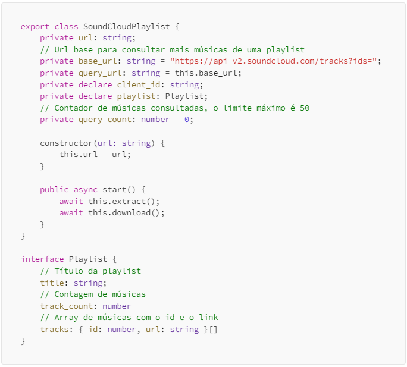
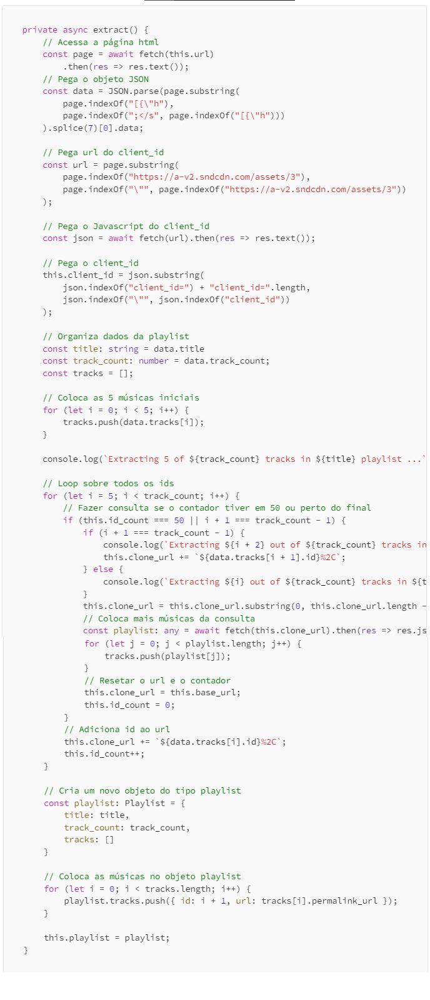
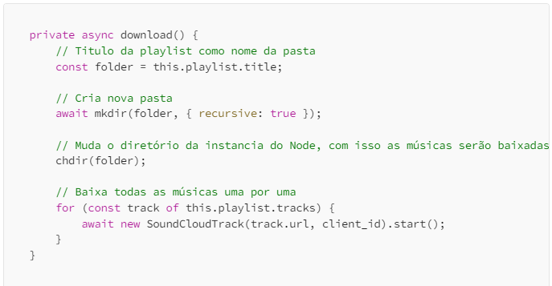

Um Guia sobre Web Scraping com NodeJS e Typescript: Parte 6 — Criando Um Scraper De Playlist
Neste artigo criaremos o scraper de músicas em uma playlist do SoundCloud.

No artigo anterior criamos o scraper de uma única música do SoundCloud, agora devemos criar um para várias músicas de uma playlist, como estamos utilizando POO, podemos reutilizar a nossa classe de baixar música múltiplas vezes para baixar várias músicas de uma playlist através de um loop.
Agora vamos criar a classe para extrair informações sobre a playlist.

Acima temos nossa classe e nossa interface que usaremos para baixar músicas em sequencia.
Agora iremos criar nosso método para extrair o restante das músicas, o SoundCloud não retorna todas as músicas em um playlist, eles só retornam 5 músicas e o resto em ids, com esses ids nos consultamos o url base e obtemos mais músicas.

Com isso temos um extrator para pegar todas as músicas, é bom lembrar que músicas geo bloqueadas dão erro ao serem baixadas, então é sempre recomendado baixar playlists criadas pelo usuário.
Agora que temos nossas músicas para baixar, só precisamos criar um loop que chama nosso baixador de música, e esperar baixar um por um.
